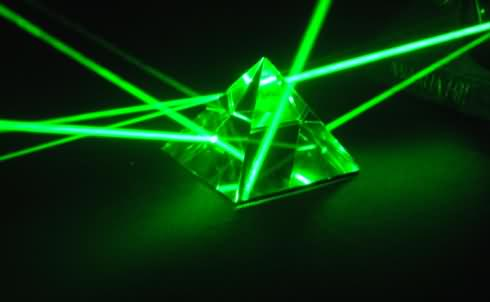

镭&氡：打造你我的“核”谐家园
中毒的花花公子，居里夫妇，镭栓剂，如何辐射你的饮用水
- 镭是医疗产品中的新宠儿，其新的潜能还在不断开花结果。在辐射范围极广的广告中，“镭钍水”被宣传为能治愈大约150种疾病的万能药，包括消化不良、高血压，以及阳痿。还有一点很不错，那位推荐此药的医生，和其他所有在处方中开这个药的医生一样，能从生产商那里收到17%的慷慨回扣。
- 玛丽·居里和皮埃尔·居里发现镭并将其分离出来的事迹广为人知，他们最终都将健康贡献给了这项科学突破，玛丽·居里更是将一生都投入其中。20世纪初期，镭因为具有能摧毁癌细胞的惊人能力，备受医学界喜爱。当然，镭的问题是，它不像热跟踪导弹，而更像是一颗核弹。它能影响接触到的所有细胞，不仅限于癌细胞。
- 不过，在镭的危险性被充分认识到之前，它享受了作为当时时髦的知名元素的短暂一生，而后迅速衰落（或者说半衰）。1902年，居里夫妇第一次从富铀矿物和现在被称作云母铀的矿石中分离出了氯化镭（铀在分解的过程中会转换为其他元素，镭只是铀向铅转换的这一单程分解列车途中的一站）。这种新元素被居里夫人称作“美丽的镭”，闪耀着放射性，以及医学界的新希望。镭的半衰期为1600年，放射性大约是铀的3000倍。这种元素非常稀有，因而极其吸引人，但它极其危险，不过我们稍后再谈这方面的事情。
- 不到一年的时间，在讨论镭能造成深度烧伤时，皮埃尔·居里提出，也许它有可能治疗癌症。最初的实验结果显示这种可能性极高，特别是在治疗皮肤癌方面。又过了一年，1904年，伦敦查令十字街医院的一位医生约翰·麦克劳德发明了一种施镭器，可以将镭应用于体内癌症的治疗，使肿瘤缩小。
- 1906年颁布的《纯净食品与药物法案》中，完全没有提到镭的规范使用，因为它被视作一种自然元素，而非一种药。所以，全美国的江湖郎中都开始探索镭的神秘特性，以谋取自己的利益。当时的报纸上如雨后春笋般出现了这样的广告——“辐射出年轻与美丽”“镭重燃千万人的健康生机”“非凡新品镭霜膏，赶走关节疼痛与肌肉疼痛，一抹就见效！”
- 今天，我们不遗余力地将饮用水中的氡去除（必须要这么做）。但是在20世纪初，则完全相反，增加氡含量的设备产业蓬勃发展。很多人都相信，除了浸泡在含氡的水池中，饮用放射性的水也是一个不错的选择，这和如今每天喝下一杯绿色饮品的概念差不多。在水中添加氡的装置中，最成功的一个便是放射水罐，它是由托马斯于1912年发明并获得专利。放射水罐从本质上说是名实相符的——它是由含镭的铀矿石做成的一个大罐子，上面安装了一个出水龙头。消费者们需要每天晚上将水罐加满，然后就能够“自由畅饮”，平均每天喝六七杯。放射水罐成了私家的放射泉，承诺可以生产出一种“令人健康的饮品”。如果一天结束之后，你还剩下了一些水该怎么办呢？广告鼓励消费者用来浇花！